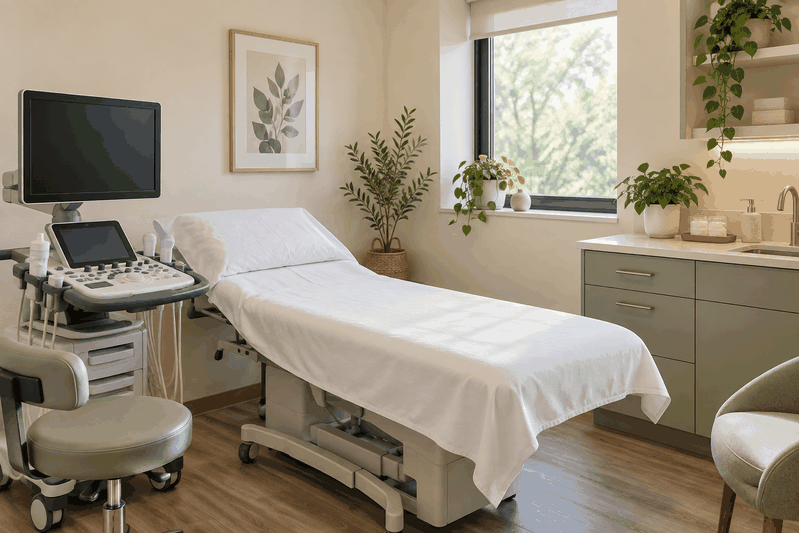
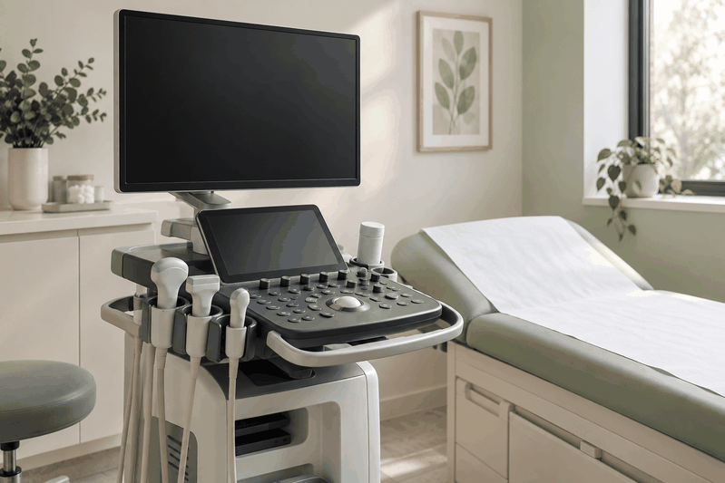
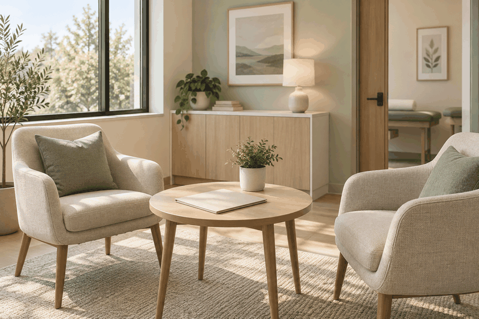

Щитоподібна залоза
Оцінювання розмірів, структури тканини, вогнищевих утворень і регіонарних лімфатичних вузлів у межах ультразвукового дослідження.
УЛЬТРАЗВУКОВА ДІАГНОСТИКА
Приклад сайту для портфоліо SHYROKO Web Studio з чіткою структурою напрямів УЗД, поясненнями щодо підготовки та помітним застереженням, що це не діючий медичний заклад.

Перелік наведено як приклад структури сайту. Фактичний набір досліджень визначає власник медичного кабінету.
Оцінювання розмірів, структури тканини, вогнищевих утворень і регіонарних лімфатичних вузлів у межах ультразвукового дослідження.
Ультразвукове оцінювання тканин молочних залоз і регіонарних зон відповідно до клінічного запиту.
Дослідження печінки, жовчного міхура, підшлункової залози, селезінки та інших доступних ультразвуковій оцінці структур.
Оцінювання нирок, сечового міхура та інших структур відповідно до направлення й клінічної ситуації.
Ультразвукове дослідження органів малого таза з вибором доступу відповідно до показань та індивідуальної ситуації.
Дослідження відповідно до терміну вагітності, клінічного запиту та рекомендацій лікаря, який веде вагітність.
Ультразвукове дослідження доступних судин із доплерівським оцінюванням за наявності відповідних показань.
Оцінювання локальних змін м’яких тканин відповідно до ділянки та клінічного запиту.
Синтетичні візуали показують, як майбутній сайт може подати простір кабінету без пацієнтів, реальних УЗД-сканів або персональних даних.

Демо-візуал
Синтетичне зображення спокійного простору для інформаційного блоку майбутнього сайту.

Демо-візуал
Візуальний приклад обладнання без реальних сканів, пацієнтів або медичних даних.

Демо-візуал
Синтетичний кадр зони, де сайт може пояснювати формат отримання результатів без персональних деталей.
Сайт може розділити напрями УЗД, підготовку, застереження та контакти так, щоб відвідувач швидко знаходив потрібну інформацію.
Тексти демонструють спокійну подачу без залякування, самодіагностики, лікувальних порад або обіцянок результату.
Підготовчі пояснення винесені в окремий блок і сформульовані як приклад структури, а не як інструкція від медичного закладу.
Фінальний CTA веде до фактичних контактів SHYROKO Web Studio і не створює враження запису до реального кабінету.
Ультразвуковий висновок не замінює клінічного діагнозу та консультації лікаря. У разі невідкладного стану телефонуйте 103 або 112.
Підготовка залежить від виду дослідження, способу його проведення та індивідуальних рекомендацій лікаря.
Часто дослідження виконують натще. Точну тривалість утримання від їжі та можливість приймання ліків необхідно завчасно уточнити в медичному закладі.
Вимоги можуть відрізнятися залежно від виду дослідження. Фактичну підготовку визначає медичний заклад, який проводить дослідження.
Спеціальна підготовка зазвичай не потрібна. Варто взяти попередні результати досліджень для порівняння, якщо вони є.
Підготовка залежить від терміну та способу дослідження. Фактичну підготовку визначає медичний заклад, який проводить дослідження.
Ці рекомендації мають загальний інформаційний характер. Дотримуйтеся інструкцій конкретного медичного закладу.
Ні. Це демонстраційний концепт SHYROKO Web Studio для портфоліо, а не сторінка чинного медичного кабінету.
Ні. Концепт не використовується для запису пацієнтів або надання медичних послуг.
Ні. Підготовка залежить від виду дослідження, способу його проведення та індивідуальних рекомендацій лікаря.
Ні. Ультразвуковий висновок не замінює клінічного діагнозу та консультації лікаря.
Зазвичай корисно мати направлення, попередні результати досліджень і медичні документи, якщо вони стосуються запиту.
Контакти належать SHYROKO Web Studio і передаються власником під час створення демонстраційного сайту.
SHYROKO WEB STUDIO
Цей концепт показує, як SHYROKO Web Studio може структурувати інформацію для професійної сторінки. Для зв’язку використовуйте фактичні контакти студії.